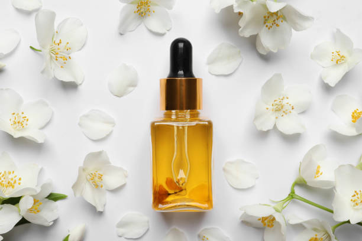
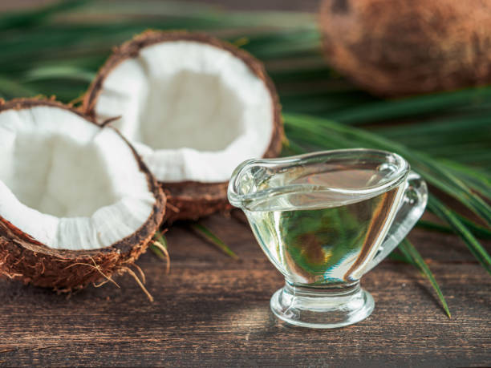
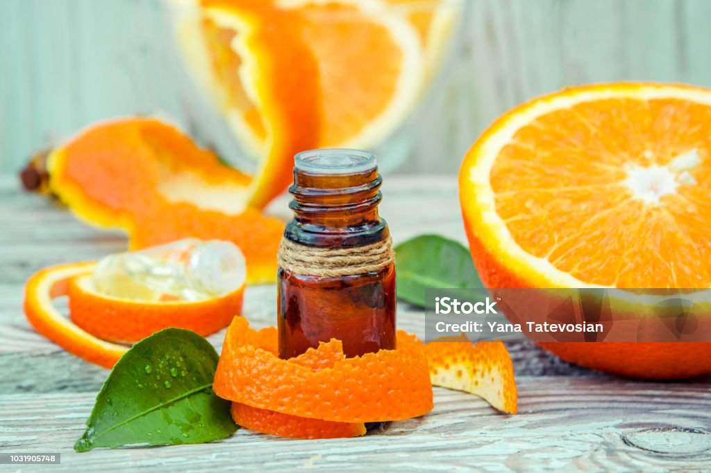

El aroma de la naturaleza
|  |
Aceite aromático Jazmín ha sido utilizado para múltiples terapias. Su dulce olor es capaz de reducir el estrés y las dificultades para dormir. También se usa mucho para reducir los niveles de ansiedad y mejorar el estado de ánimo $5.000 |
|  |
Aceite de Aromaterapia coco es muy relajante y ayuda a prevenir la piel seca y descamada. También retrasa la aparición de arrugas y flacidez, así como ayuda a tratar varios problemas de la piel, incluyendo eccema e infecciones de la piel. $4.000 |
|  |
Aceite de Aromaterapia Naranja es usado para ayudar a calmar el estrés, favorecer la relajación del cuerpo y la mente y dejar una sensación muy agradable en aquellos pacientes que sufren de ansiedad o cuadros depresivos en su día a día. Aroma dulce y con alguna nota ácida que refresca y crea ambientes acogedores. $5.500 |